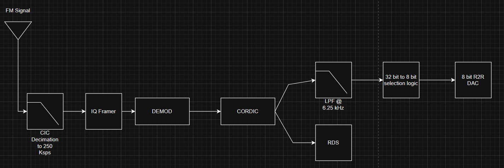
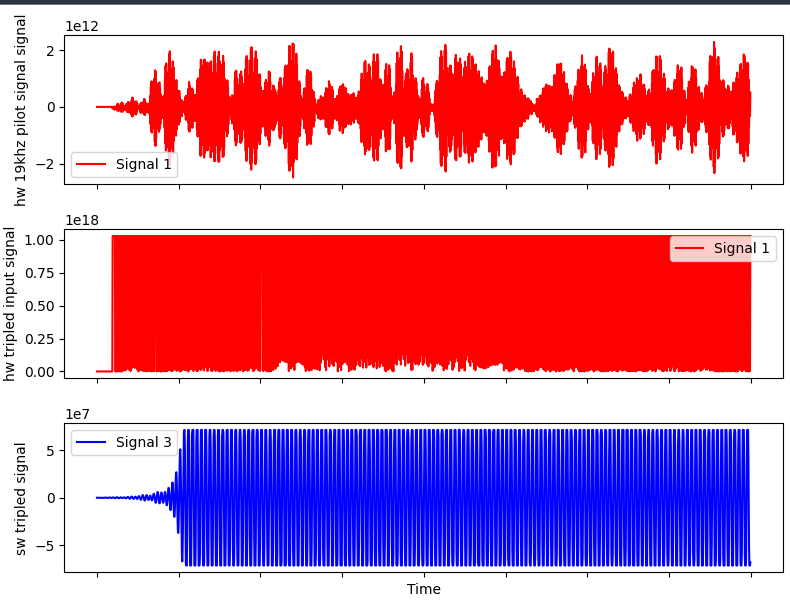
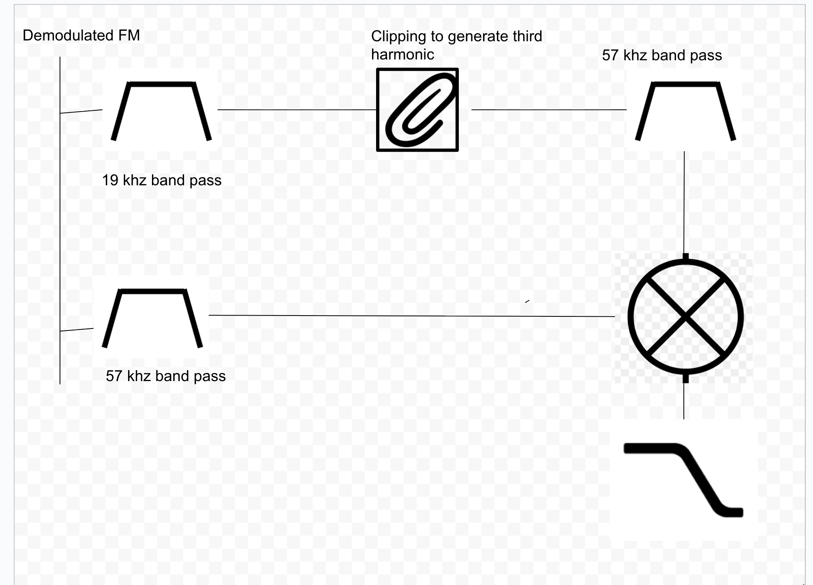
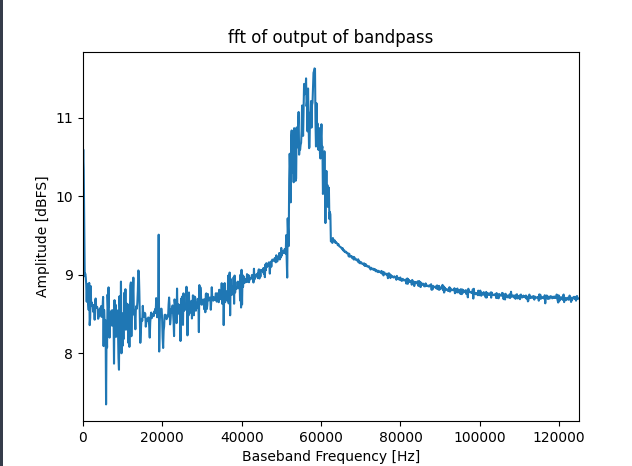
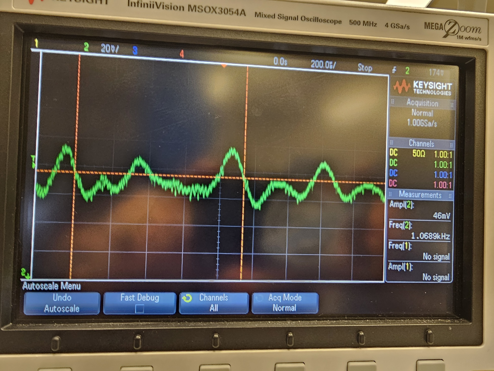

RadioHead
A Real Time FM Radio Demodulator (Audio + RDS) on the RFSoC 4x2
github
video
Radio Head was me and my partner Anthonys final project for Digital Systems 2 at MIT. We wanted to do something that made us get a better understanding RF and DSP and Digital signal processing. So our plan was we would demodualte the FM signal in the PL(programmable logic) part of the FPGA. Then we'd isolate the RDS signal, decode it(in the PL) then stream it up to the PS(the ARM processor on the ultrascale). We also wanted to stream it out the FPGA via the PL using a PWM driving a DAC hooked up to a speaker. Since we thought this was trivial we thoguht we could do this in about 2 days. Then we dreamed about various other features auto locking on stations, getting a spectrual display, rave visual, see through walls, cure cancer,etc ,etc ,etc. Almost every person told us that Demodulating FM in RTL would be harder than we thoguht, and god were they right.
Our final project was on the UltraScale+ MPSoC(WAYYYYY TO OVERKILL FOR THIS THE ADCS WERE AT THE GIGASAMPELS) these FPGAs were so nice they have both a PS(processor that can like run python and snake) and a PL(a programmble logic, bascially how every fpga works). We reall wanted to do as much as possible in the PL since, thats cooler and more difficult. The first battle was just getting IQ into the in a shape we could actually use. FM stations live between about 80 and 110 MHz, so we mix down to baseband with an NCO, then decimate and filter with CICs, because mixing throws harmonics everywhere and we don't want to be doing math on a pile of samples we're about to throw out anyway. That gets us to a nice 250 ksps stream, which then gets "framed" so the DMA can actually move it, and then split off into the two downstream pipelines: audio and RDS..

Then the actual demodulation, aka the part everyone warned us about. The nice thing about FM is that the information is in the derivative of the phase (f = dphi/dt baby), so demodulating is really just "what's the angle between this sample and the last one." The textbook(AND THE WAY OUR PROF,TA,AND THE AI , AND THE INTERNET, AND PYSDR, AND THE RF GODS WHO TALKED TO ME IN MY SLEEP TOLD US TO DO) way is to multiply the current sample by the complex conjugate of the previous one, which leaves you a vector whose angle is exactly the phase difference, and then you shove that through a CORDIC to get the arctan. Very clean on paper. In hardware it's really damn ugly, because 16 bit I and Q times 16 bit I and Q gets you a 64 bit product, and suddenly your CORDIC has to be a 64 bit CORDIC and everything downstream has bit growth issues to match, and then its 128bit audio and that just sucks. We spent a real amount of time trying to do it the other way instead which was running each sample through the CORDIC first, then just subtract consecutive angles because that keeps the bit width where it started and doesn't blow up the whole pipeline.Sadly neither of us had taken either signal processing,or any RF stuff before hand. So when thsi didn't work, it was really really horrible and bad to debug, and like the worst week of my life(besides the 2007 reccession). After multiple people telling us maybe FM Radio(on the FPGA with gigasample ADCs) was out of our reach, we called it and ate the bit growth, widened everything and kept it pushing. The CORDIC itself got extended off a bit new coefficients for 64 bit fixed point, and the angle output remapped so it comes out between 0 and 2pi for every input instead of only behaving in one quadrant(these little changes would all take about a day btw but it wil just stay a sentence in the write, but this was 24 damn hours of my life). When we finally dumped the demodulated angle up to the PS and turned it into a wav file, and could hear audio yayyyyyyyyy.

AFter we got Demod working we split and i tackled the RDS. RDS(if you didnt know incase your below the age of 47) is the little digital stream that tells you the station name and the song. Its encoded with BPSK at 1187.5 bits per second sitting at 57 kHz in the demodulated FM band, at 16 samples per symbol. To get it down to baseband you need a carrier thats frequency locked to it, and normally you'd throw a Costas loop at that, which in RTL is a nightmare I was not going to win. But the standard says the 19 kHz pilot tone is frequency locked to the 57 kHz subcarrier, so if you can bandpass out the pilot and generate its third harmonic you get a free local oscillator. The cheap way to make odd harmonics is to just clip the signal, so the chain is: bandpass the 19 kHz, clip it, bandpass the 57 kHz back out of the result, mix. Then you still have symbol sync to solve, because of your 16 samples per symbol you only actually want one of them. Real SDRs use a Mueller and Muller loop or some kind of training scheme, both of which were way too much for me in fabric, so I used a zero crossing trick instead (this idea came from Oliver our awesome TA whos website ill link later, and its downstream of PySDR's demod) every potential symbol boundary is a place where the BPSK crosses zero, so you detect crossings and fire a symbol clock every 32 of them. Threshold to get your 1s and 0s, then undo the differential Manchester encoding, since with diff Manchester it's the transition that carries the bit and not the level.


And that all works! In the PS. On data pulled off the hardware. Which is exactly the thing we swore in the proposal we weren't going to do. I got the 19 kHz bandpass, the 57 kHz bandpass, and a mixer that as far as I could tell was fine, but the clipped signal never came out with real 57 kHz content in it and the whole pipeline just stalled right there. So the PL half of RDS is the one piece of the original pitch that didn't make it, which is a very annoying place to run out of semester.

Anthony owned the audio coming out of the pl part, which was his own little hell of FIR low passing the mono audio out of the 250 ksps stream, widening everything to 64 bits so signed math would stop biting us, and then cramming a signed 32 bit sample into an external 8 bit DAC hanging off the PMOD headers without destroying it. But it worked so YAYYYY.

So no we sadly didn't cure cancer or see through walls, and the two day estimate was off by like a semester. Neither of us had a real DSP/RF background going in and we tried to close that gap by jumping into this. I'm writing this about 7 months after and I can pretty confidently say that was a really good experience and we im glad we just built stuff. I'm glad I had this experience I feel like it made a lot of my stuff at Crabi actually work.